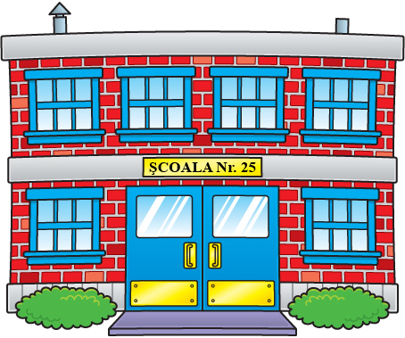

Şcoala Gimnazială Numărul 25 Bucureşti
Facebook
Blog
Grădiniţă
Clasa pregătitoare
Profesori
Galerie

Baza materială
Contact
Noutăți
27 Februarie 2018
Ziua PORŢILOR DESCHISE va avea loc în data de
vineri 9 martie 2018 între orele 14.00 – 18.00.
27 Februarie 2018
Pentru mai multe informații accesați acest pliant:
Ziua Porților Deschise
27 Februarie 2018
Pentru mai multe detalii - accesați:
Criterii specifice de departajare în vederea înscrierii în învățământul primar, pentru anul școlar 2018-2019
.
27 Februarie 2018
Extras din Metodologia de înscriere a copiilor în învăţământul primar pentru anul şcolar 2018-2019, OMEN nr. 3242.23.02.2018:
INFORMAREA PUBLICULUI PRIVIND ÎNSCRIEREA ÎN ÎNVĂŢĂMÂNTUL PRIMAR
.
27 Februarie 2018
Planificarea activitatii de evaluare a nivelului de dezvoltare psihosomatica, 5- 23 Martie 2018, pentru prescolarii care implinesc varsta de 6 ani in intervalul 01.09 -31.12.2018 sau dupa data de 31.12.2018:
PLANIFICAREA ACTIVITATII DE EVALUARE A NIVELULUI DE DEZVOLTARE PSIHOSOMATICA
.
27 Februarie 2018
Precizari privind activitatea de evaluare psihosomatica 1 - 23 Martie 2018:
precizari 2018
.